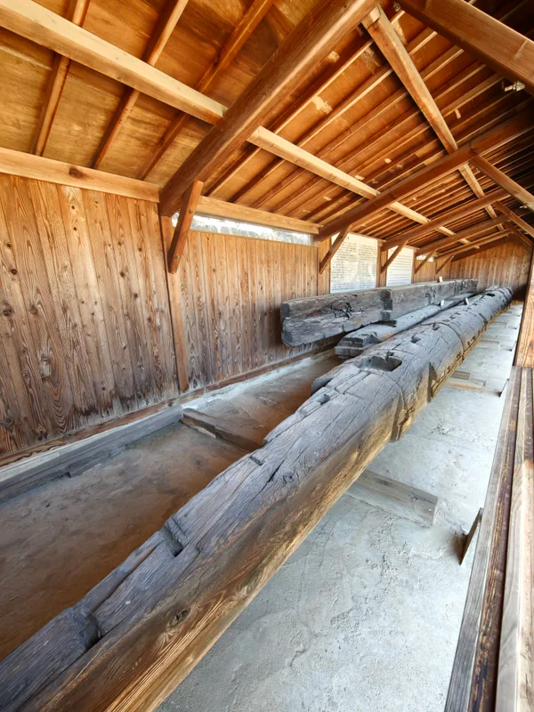
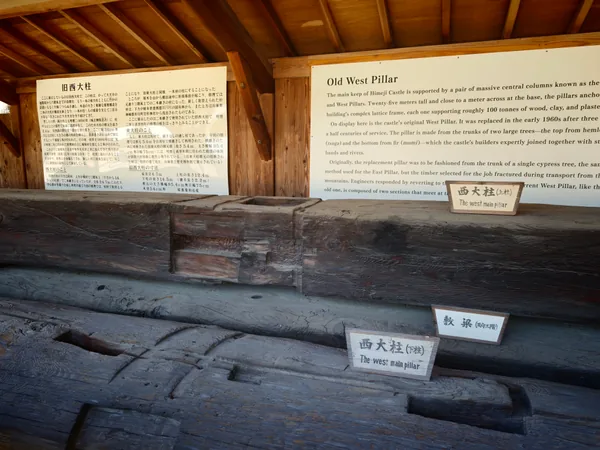
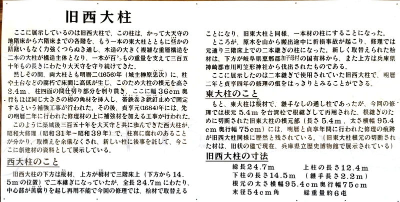

天守群を上から見た配置の模式図。屋根の形状・建物の大きさは説明のため簡略化しています。
天守群を上から見た配置の模式図。屋根の形状・建物の大きさは説明のため簡略化しています。
ひとつの天守ではなく、つながる四棟
正面からは大天守に目を奪われますが、まわりには乾・東・西の小天守があります。その間をつなぐのが、イ・ロ・ハ・ニの渡櫓。「連立式」という名前を、屋根のつながりとして眺めてみると覚えやすくなります。
四つの天守の位置と階数＋ 詳しく見る− 閉じる
- 大天守 南東
- 外観5重 / 地上6階・地下1階
- 乾小天守 北西
- 外観3重 / 地上4階・地下1階
- 東小天守 北東
- 外観3重 / 地上3階・地下1階
- 西小天守 南西
- 外観3重 / 地上3階・地下2階
外から数える屋根の「重」と、内部の「階」は一致しません。階数は姫路市の指定文化財一覧の表記に合わせています。
 撮影：田路昌也第七景「男山高台 新緑の連立陣」へ
撮影：田路昌也第七景「男山高台 新緑の連立陣」へ
参考：姫路城公式「城の楽しみ方」、姫路市「市政の概要」指定文化財一覧（PDF）、姫路城公式ガイド p.43–46（PDF）
 赤が東西の大柱。床・横架材との関係を示す模式図で、実測図ではありません。西大柱の3階部分の継ぎ目を簡略表示し、東大柱の根継ぎや細かな加工は省略しています。
赤が東西の大柱。床・横架材との関係を示す模式図で、実測図ではありません。西大柱の3階部分の継ぎ目を簡略表示し、東大柱の根継ぎや細かな加工は省略しています。
柱だけでなく、横につなぐ材にも目を向ける
二本の大柱は、各階の横架材と結ばれています。太い柱そのものに加えて、横に延びる材がどう組み合わさるのかを見ると、外からは見えない木造の骨組みに気づきます。
西大柱の継ぎ目と、四つのまとまり＋ 詳しく見る− 閉じる
西大柱は3階部分で二本の材を継いでいます。一方、天守の構造は「地階〜2階」「3階」「4階」「5階〜6階」という四つのまとまりで捉えられ、大柱と横架材がそれらを結びます。
図では継ぎ目の位置を示しています。実際の継手の加工形状は省略しています。
現地で見る / 有料入口の手前
天守に入る前に、旧西大柱を見る
三の丸、有料入口の手前には、かつて天守を支えていた旧西大柱が展示されています。約350年にわたって使われ、昭和の大修理で取り替えられた柱です。今も天守の中に立つ柱とは別のものですが、横たわる長い材を目の前にすると、建物の中ではつかみにくい大きさが見えてきます。

天守を支えていた柱を、地上で間近に見る。撮影：田路昌也 / 2026年3月17日
「上柱」と「下柱」で、一本の柱
旧西大柱は、下側の樅と上側の栂を、天守3階の床より上で継いだ柱でした。展示の札にある「上柱」「下柱」を見比べると、一本に見える大柱が、二本の木を組み合わせたものだったと分かります。

奥が上柱、手前が下柱。間の「敷梁」は別の部材です。写真は継ぎ合わせた状態ではなく、分けて展示された旧材を写しています。撮影：田路昌也 / 2026年3月17日
表面には、他の部材と組み合うための加工や、後の修理の跡も残っています。見える切り欠きのすべてが、上柱と下柱の継ぎ目というわけではありません。
東と西では、継いだ理由が違う
- 西大柱
- もともと上柱と下柱を継いだ柱。昭和の大修理で新しい檜材に取り替えられ、現在も3階部分で二本を継いでいます。
- 東大柱
- もとは継ぎ目のない一本の樅材。昭和の大修理で根元5.4mを台湾檜に替えて継ぎ直し、残りの材を引き続き使っています。
つまり、「西は二本継ぎ、東は一本材」だけでは、現在の姿を説明しきれません。東にも、傷んだ根元を新しい材につなぐ「根継ぎ」があります。柱の違いは、建てたときの工夫と、守り続けるための修理の両方を物語っています。
一本材になるはずだった、新しい西大柱＋ 詳しく見る− 閉じる
昭和の大修理（1956〜1964年）では、旧西大柱の内部に腐朽が見つかり、取り替えることになりました。新しい柱には、一本の長い檜を使う計画がありました。
ところが、選ばれた原木が山から運び出される途中で折れてしまいます。そこで、元の柱と同じように3階部分で二本の材を継ぐことに。現在の西大柱にも、修理を進めた人たちの試行錯誤が残っています。
参考：観光庁の解説「旧西大柱」。修理当時の継手の様子は、姫路城公式「昭和の大修理写真・大柱」でも見られます。
現地の説明板と、旧西大柱の寸法
説明板には、旧西大柱の上柱が12.4m、下柱が14.5m、継手の長さが2.2mと記されています。二本の長さをただ足すのではなく、重なる部分を差し引くと、全長24.7mになります。
ここでの24.7mは、展示されている旧西大柱の説明板の数値です。冒頭の構造図は、公式ガイドの大柱の説明にある24.6mを用いています。

解説のもとになった現地説明板。東大柱の根継ぎについても記されています。撮影：田路昌也 / 2026年3月17日
 撮影：田路昌也 / 最上階からの眺め第二十八景「天守の窓辺 鯱瓦と夜景」へ
撮影：田路昌也 / 最上階からの眺め第二十八景「天守の窓辺 鯱瓦と夜景」へ
参考：現地「旧西大柱」説明板（2026年3月17日撮影）、観光庁「旧西大柱」、姫路城公式ガイド p.47「大通し柱構法」（PDF）、兵庫県立歴史博物館「姫路城」。展示場所の案内は撮影時点のものです。訪問時の公開状況は姫路城公式サイトと現地の案内をご確認ください。
{kind=link}
{kind=link}
{kind=link}